Anthony and Helen: the wedding, the shop, the home on 86th Street and their children.
Part ThreeAnthony and Helen
Two families from two Lebanese villages came together in Brooklyn at the end of 1940.
They did not have far to go to find each other. The Awn brothers lived at 1047 Bay Ridge Parkway, which is 75th Street, and the Saydahs at 33 86th Street, about eleven blocks away in the same Brooklyn neighborhood of Bay Ridge. We do not yet know how Anthony and Helen met, and it is a good question for the family.
Anthony, a citizen and a shopkeeper
Still open in this line ↓Anthony’s page
Spellings: Anthony’s family name is Aoun on his 1939 declaration and Awn from his 1942 oath, and records also show Owen and Aun. On his 1920 entry he is “Antoine Aoun.” “Tony Awn” in a 1963 newspaper column is probably him.
Anthony's declaration of intention, 4 May 1939. The first step toward citizenship. At 25 he was single, a "negligee salesman" living at 1047 Bay Ridge Parkway, dark-complexioned with brown eyes, and gave his race as Syrian. He entered at Rouses Point on 5 September 1920 as Antoine Aoun, and signed "Anthony Aoun." His photograph is pasted on the form. A certificate number is hidden. Source: Declaration of Intention no. 279892, U.S. District Court, Eastern District of New York (Brooklyn), 4 May 1939. As viewed on FamilySearch. Name as written: Anthony Aoun.
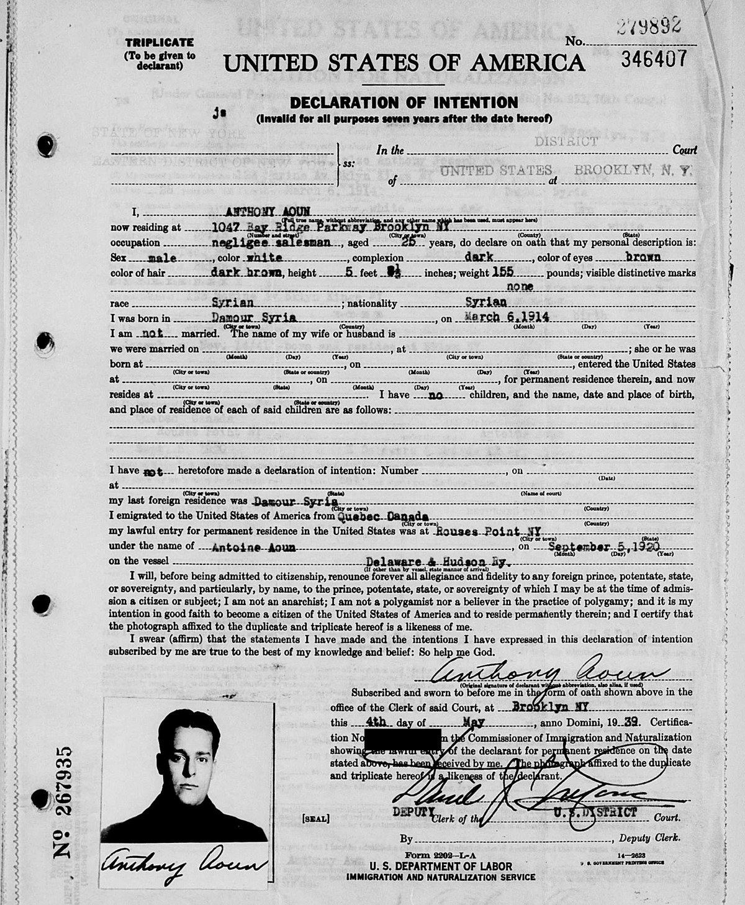
Anthony's draft registration card, 16 October 1940. Written in his own hand: Anthony Aoun, born 6 March 1914 in Damour, "Country of Citizenship: France" (see the note on his nationality below), employed at Koury-Awn, Inc., 38 East 32nd Street, with his brother John at 1047 Bay Ridge Parkway as the person who will always know his address. The back describes him as 5 feet 8½ inches, 168 pounds, with an appendicitis scar. Source: U.S. World War II draft registrationcard, Kings County, New York, 16 October 1940. As viewed on FamilySearch. Name as written: Anthony Aoun.
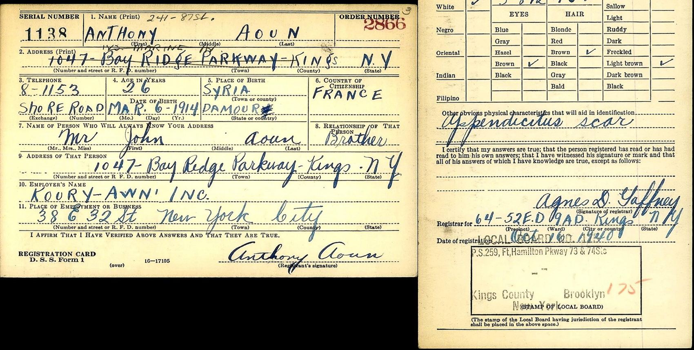
Anthony's petition for naturalization, 1942. In his own sworn words: born 6 March 1914 in Damour, entered at Rouses Point on 5 September 1920 as Antoine Aoun, married Helen on 29 December 1940, and asking to be known as Anthony Awn. Source: Petition for Naturalization no. 346407, U.S. District Court, Eastern District of New York (Brooklyn), 1942. As viewed on FamilySearch. Name as written: Antoine Aoun (new name requested: Anthony Awn).
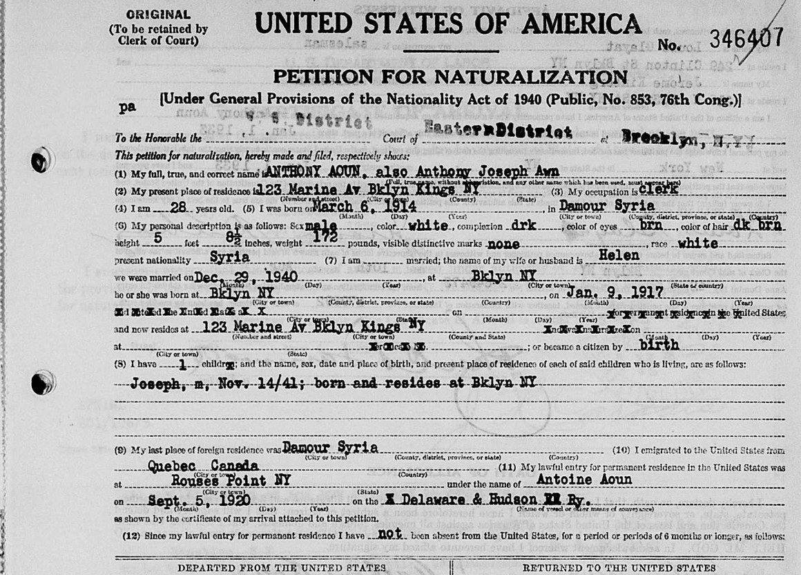
Anthony’s certificate card, 10 November 1942. The index card from the Eastern District of New York (NARA M1164, roll 31): “AWN Anthony (Anthony Aoun),” residing at 123 Marine Ave, Brooklyn, age 28, order of admission and certificate issued 10 November 1942, certificate no. 5332454, petition no. 346407 and alien registration no. 1680131 (as we read them), signed “Anthony Awn.” A typed address, 241 87th St, is at the top, which we read as a later address. Source: Ancestry Library Edition (the card image only).
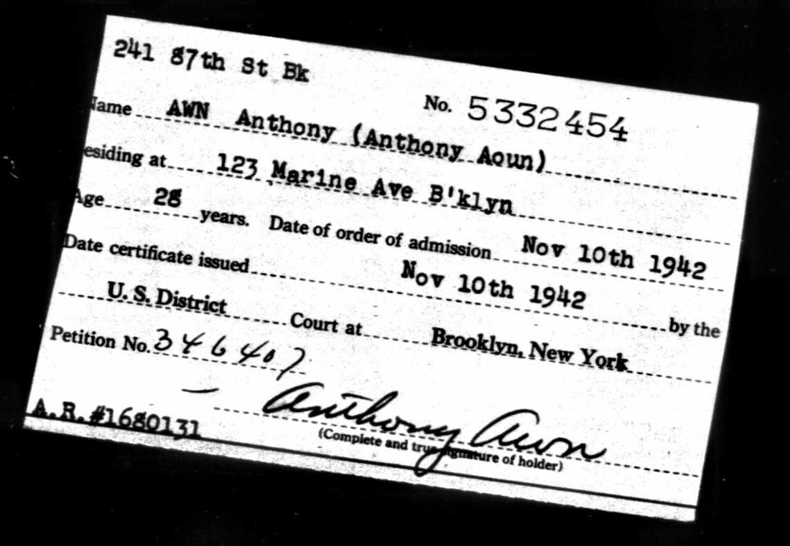
The witnesses and the oath, 1942. Louis Glayat and Jerome Kinberg, both salesmen, swore on 10 August 1942 that they had known Anthony since 1 January 1933. Below, Anthony took the oath of allegiance on 10 November 1942. He signed twice: one signature looks like "Awn" and the other "Aoun." The certificate-of-arrival number is covered (the naturalization certificate number at the bottom, 5332454, is visible). Source: Petition for Naturalization, U.S. District Court, Brooklyn, as viewed on FamilySearch.
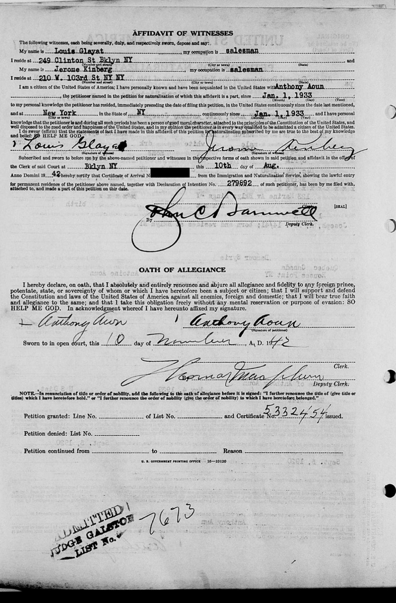
Awn's Specialty Shop, 1946. Confirmed: a help-wanted ad for Awn's Specialty Shop on Greenwich Street, Manhattan. The shop name and street are shown in the ad itself. The paper and date (New York Post, 29 October 1946, page 44) come from the caption on the saved copy; the clipping does not print them.
Source: New York Post, 29 Oct 1946, p. 44. Name as written: Awn's Specialty Shop.
Awn's Specialty Shop, July 1949. Confirmed: an ad for an experienced salesgirl (lingerie, sportswear) at 82 Greenwich Street, near Rector, in the Brooklyn Eagle of 31 July 1949, page 34.
Source: Brooklyn Daily Eagle, 31 Jul 1949, p. 34. Name as written: Awn's Specialty Shop.
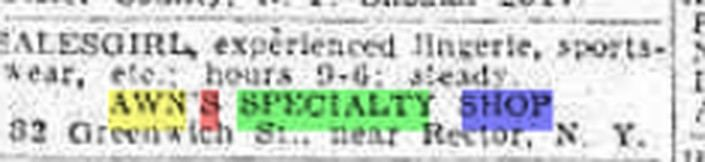
Awn's Specialty Shop, 13 October 1949. Confirmed: the same shop, 82 Greenwich Street, near Rector, advertising for a young lady with specialty-shop experience (Brooklyn Eagle, 13 Oct 1949, page 26).
Source: Brooklyn Daily Eagle, 13 Oct 1949, p. 26. Name as written: Awn's Specialty Shop.
Awn's Specialty Shop, 16 October 1949. Confirmed: the same ad ran again three days later (Brooklyn Eagle, 16 Oct 1949, page 36).
Source: Brooklyn Daily Eagle, 16 Oct 1949, p. 36. Name as written: Awn's Specialty Shop.
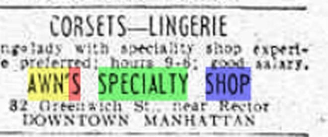
Anthony and Helen in the 1950 census. Anthony and Helen on 86th Street in the 1950 census (ED 24-1265, sheet 8): “Awn Anthony,” head, 35, married, born Syria, naturalized, working 71 hours as a “comptroller” in retail ladies’ wear, a private employer; and “Helen,” wife, 33. The lines below them are the couple’s young children and are left out here because they may be living. By his birth date Anthony was 36; the census says 35. Source: 1950 census, Brooklyn (copy in our files).
Anthony, from the Caravan, 10 November 1955. The photograph on page 1 of the Caravan of Thursday 10 November 1955, captioned “President of St. Nick’s,” with “Anthony Awn” beneath it, cropped from the page. The page itself names him beside the photograph; his 1966 obituary calls him a past president of the St. Nicholas Young Men’s Association.
Anthony Awn, "President of St. Nick's," November 1955 (photograph). A front-page portrait of Anthony in a bow tie, captioned "President of St. Nick's: Anthony Awn," beside a report that the club's annual affair at the Hotel St. George, Brooklyn, on Saturday 5 November was "a huge success," with every table and seat sold weeks ahead and the place full to capacity. This is the clearest published picture of Anthony in the papers collected so far, at about age 41. Source: The Caravan, Brooklyn, N.Y., Vol. 3 No. 20, Thursday, 10 November 1955, p. 1. Brooklyn Newsstand, view source. Name as printed: Anthony Awn.
Anthony re-elected president, February 1956 (photograph). "New Officers of St. Nick's Re-elected," with a portrait captioned "Mr. Anthony Awn." The text says he was re-elected president of the St. Nicholas Young Men's Club; the other officers named (surnames left out here) are George, vice-president; Albert, English secretary; Atallah, Arabic secretary; Assad, treasurer; Fred, corresponding secretary; and Thomas, sergeant-at-arms; Gabriel was elected to the Board of Trustees. Source: The Caravan, Brooklyn, N.Y., Thursday, 9 February 1956, p. 7. Brooklyn Newsstand, view source. Name as printed: Mr. Anthony Awn.
The Syramar tournament, 13 December 1963. Home Reporter and Sunset News, Friday 13 December 1963, page 38: the Syramar Golf Club tournament. “Class B champion was Tony Awn,” with first and second runners-up named in the lines that follow. That “Tony Awn” is Anthony is probable, not proven: his 1966 obituary calls him “Tony,” but no first name or address is printed here.
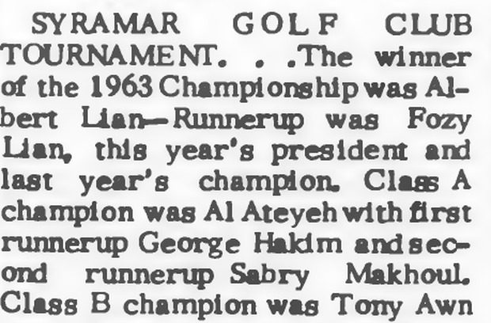
Awn's Specialty Shop, 1965. Confirmed: an ad for Awn's Specialty Shop in the New York World-Telegram and Sun of 23 January 1965, page 4, with telephone number BO 9-0363.
Source: New York World-Telegram and Sun, 23 Jan 1965, p. 4. Name as written: Awn's Specialty Shop.
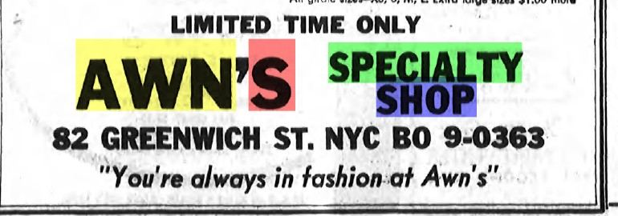
Awn's Specialty Shop, 1 June 1984. Confirmed: an ad in the Home Reporter and Sunset News, 1 June 1984, page 6.
Source: Home Reporter and Sunset News, 1 Jun 1984, p. 6. Name as written: Awn's Specialty Shop.
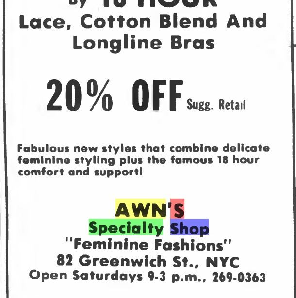
Awn's Specialty Shop, 15 June 1984. Confirmed: the ad ran again in the Home Reporter and Sunset News, 15 June 1984, page 17.
Source: Home Reporter and Sunset News, 15 Jun 1984, p. 17. Name as written: Awn's Specialty Shop.
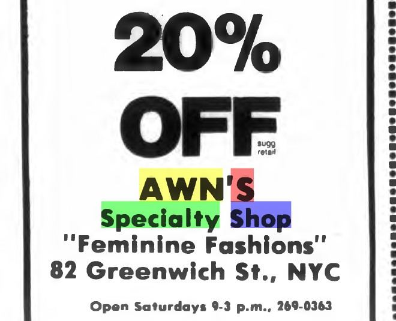
- 6 Mar 1914Born in Damour
- 5 Sep 1920Enters at Rouses Point as “Antoine Aoun”
- 4 May 1939Files to become a citizen
- 16 Oct 1940Registers for the draft
- 10 Nov 1942Takes the oath
- 29 Oct 1946The first ad we hold for Awn’s Specialty Shop
- Nov 1955Pictured as “President of St. Nick’s”
- Jul 1966Dies
What we foundAnthony’s papers write his nationality two ways: Syrian in 1939 and 1942, and “France” on the 1940 draft card. No record says why.
“You’re always in fashion at Awn’s”An ad for Awn’s Specialty Shop, World-Telegram and Sun, 23 January 1965, page 4
Anthony J. Awn was born in Damour on 6 March 1914 and says he came in at Rouses Point, New York, on 5 September 1920 as “Antoine Aoun,” by train from Quebec. When he filed his declaration of intention on 4 May 1939 he was 25, single and living at 1047 Bay Ridge Parkway, and he called himself a “negligee salesman.” He described himself as dark-complexioned, with brown eyes and dark brown hair, gave his race and nationality as Syrian, and signed “Anthony Aoun.”
His draft card of 16 October 1940 names his employer as “Koury-Awn’ Inc.” at 38 East 32nd Street and gives his brother John at 1047 Bay Ridge Parkway as the person to contact. It also gives his country of citizenship as “France,” which probably reflects Lebanon’s status under the French Mandate, though no record says so. His address was changed by hand to a Marine Avenue number. We do not know who owned Koury-Awn, Inc.; it may have been a business of his brother-in-law Michael Koury, but that is only a guess. Mitchell’s card, written the same day, names a different employer, John Aoun at 82 Greenwich Street, so Anthony’s East 32nd Street employer was not John’s business at that address.
He took the oath of citizenship on 10 November 1942. His petition calls him “Anthony Aoun, also Anthony Joseph Awn,” a clerk at 123 Marine Avenue, married to Helen (born 9 January 1917 in Brooklyn), with a son, Joseph, born 14 November 1941, and asks that his name become Anthony Awn. It gives the marriage date as 29 December 1940; the wedding section has the dates that disagree. His witnesses, Louis Glayat and Jerome Kinberg, both salesmen, swore they had known him since 1 January 1933.
By 1946 a shop called Awn’s Specialty Shop, at 82 Greenwich Street near Rector Street in Lower Manhattan, was advertising for a salesgirl in lingerie and sportswear, and it kept advertising in 1949, 1965 and 1984. The 1950 census calls Anthony a “comptroller” in retail ladies’ wear, and his 1966 obituary calls him an associate in the shop. The family says the brothers began with a fabric store and that Anthony, John, Elias, Theresa and Matilda all worked in the business (the family’s account).
He was also active in the community. The Caravan, the Lebanese-American newspaper, lists a “Mitchell Awn” and an “Anthony Awn” among the officers of the St. Nicholas Young Men’s Club in 1953 and 1954, and pictures him as its president in November 1955, with a re-election notice in February 1956. His 1966 obituary calls him a past president of the St. Nicholas Young Men’s Association, which fits the 1955 and 1956 items that name him beside his photograph as president; that the 1953 and 1954 officers are our Mitchell and Anthony is probable. A “Tony Awn” won the Class B golf championship at the Syramar Golf Club in 1963, probably him. The family belonged to Our Lady of Lebanon, the Maronite church in Brooklyn Heights, where the family’s funerals were held in the 1920s and 1930s when it stood at 295 Hicks Street; Joseph’s wedding there in 1967 is on record.
Still open
His nationality: “Syrian” on the declaration, “Syria” on the petition and “France” on the draft card, with no reason given.
His age in the 1950 census: 35 as printed, 36 by his birth date.
The wedding date: 29 December 1940 in his petition against other dates in later records (see the wedding section).
Who owned Koury-Awn, Inc., and whether the 1963 “Tony Awn” is Anthony.
Family memory: what Anthony was like. If you know, please tell Sarah.
Questions for the family
- What do you remember of the shop on Greenwich Street?
- Does anyone know who owned Koury-Awn, Inc.?
How we know this
- Anthony’s declaration of intention, 1939 From the record. Its nationality is one of the open conflicts.
- His 1940 draft card From the record, as read. “France” is one of the open conflicts.
- His petition for naturalization, 1942 From the record, as read.
- The certificate card, 10 November 1942 From the record, as read; a card image only.
- The witnesses and the oath, 1942 From the record, as read.
- Help-wanted ads, 1946 and 1949 From the printed pages.
- The 1950 census From the record, as printed. His age is a small open question.
- The Caravan, 5 November 1953 From the printed page. That these are our Mitchell and Anthony is probable.
- The Caravan, 10 November 1955 From the printed page.
- The Caravan, 9 February 1956 From the printed page.
- The Home Reporter, 13 December 1963 From the printed page. That “Tony Awn” is Anthony is probable.
- Ads for goods, 1965 and 1984 From the printed pages.
The wedding
Still open in this line ↓Anthony’s pageHelen’s page
Spellings: the family name is Aoun, Awn or Owen in the records, and Helen's is Saydah, Saida or Sayda. We treat each set as one family.
Anthony and Helen's wedding portrait. The print has no date, and the family says it shows them.
1940 census, the Awn brothers, Bay Ridge Parkway. The household at 1047 Bay Ridge Parkway, counted 20 April 1940 (as read), headed by “Own, John J.,” 36, with “Michael J.,” brother, 30, and “Anthony J.,” brother, 26 (as read), all single, born Lebanon; Anthony a salesman in “wholesale ladies wear”. Name as written: Own.
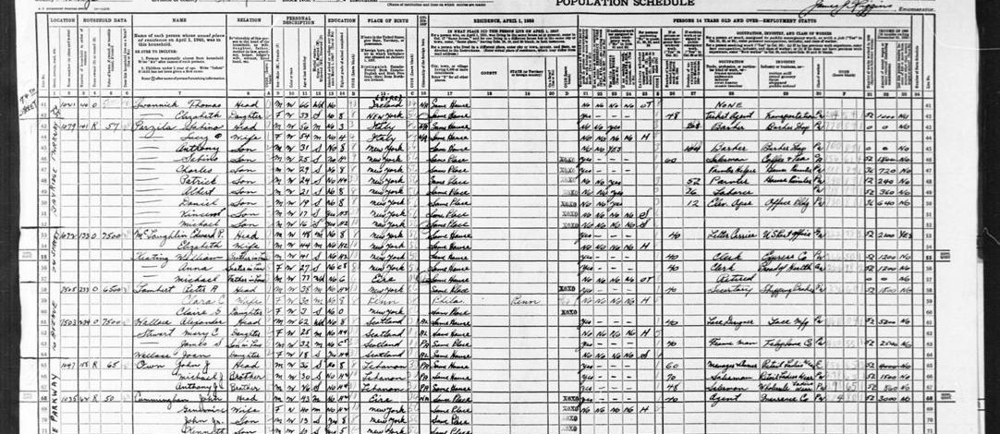
1940 census, the Saydah household, Brooklyn. The Saydah household, counted 10 April 1940 (as read), headed by “Saydah, Antone W. P.,” 59, born Syria, a store owner (imported linens), with his wife “Wasseela,” 47, and “Helen A.,” daughter, 22, single, born New York.
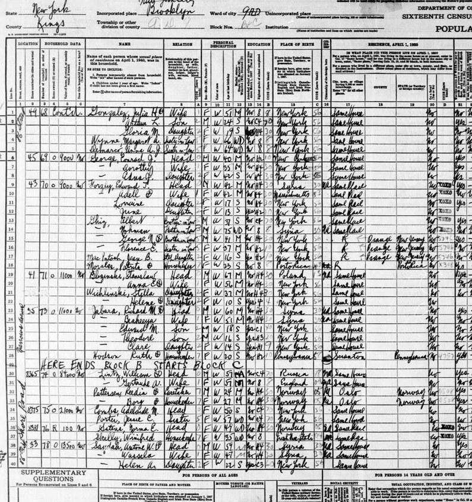
Marriage-license index, Brooklyn, December 1940: "Awn, Anthony J.", no. 29120, day 19. The month is written only as a ditto mark, which we read as December from the page it sits on. An index line, which points to the record but is not the record.
Anthony's petition for naturalization, 1942: the line that reads "we were married on Dec. 29, 1940, at Bklyn NY", with Helen's birth "Jan. 9, 1917" beneath. From the record.
Anthony Aoun, 1939. The photograph on Anthony’s declaration of intention, 4 May 1939, with his signature “Anthony Aoun” beneath.
Helen, family photograph A. The family’s photograph A, undated. The family says it shows Helen (the name is the family’s label on the print).
- 1940Anthony lives with his brothers on Bay Ridge Parkway
- 19 Dec 1940Marriage license, as the index lists it
- 29 Dec 1940The wedding, probably
- 3 Jan 1941Two Arabic papers report it
What we foundAn Arabic paper noticed the priest. At an earlier wedding, Father Estefan had refused to bless the crowns outside his own church, but he blessed these himself at Saint Anselm's. The paper adds that the groom was Maronite and the bride was not (our translation, to be confirmed by a native reader).
“filled after noon last Sunday”As-Sameer, 3 January 1941, p.3, on the wedding at Saint Anselm's (our translation, to be confirmed by a native reader)
On a Sunday afternoon at the end of 1940, Saint Anselm's church in Brooklyn filled for a wedding. Anthony Awn, who the 1940 census shows living with his brothers on Bay Ridge Parkway and working as a salesman in wholesale ladies' wear, married Helen Saydah. Helen's father, Antoon, was called "the great merchant" in one of the papers that reported it.
Two Arabic papers, As-Sameer and Al-Hoda, printed the news on 3 January 1941 (our translation, to be confirmed by a native reader). The church was full "after noon last Sunday." The bride came in on her father's arm. Father Mansour Estefan blessed the crowns. Anthony's brother, named Louis in one paper and Elias in the other (we take them to be one man), stood with the couple, and so did Helen's sister Evelyn. A banquet at the groom's family home followed, and then the honeymoon.
"Last Sunday" in a paper dated Friday 3 January points to Sunday 29 December 1940. That is the date Anthony gave on his 1942 petition for naturalization, and a Brooklyn marriage-license index lists license no. 29120 for the two of them on 19 December 1940, ten days earlier (an index line, a pointer rather than proof). So the wedding was probably on 29 December 1940.
Still open
A note in the Caravan of 9 January 1958 gives December 28th for the couple's 17th anniversary, one day earlier. We lean toward 29 December until the church register is found; the St. Anselm's and Our Lady of Lebanon registers have not yet been asked.
Family memory: stories of the wedding day, the banquet, or the honeymoon. If you know, please tell Sarah.
Questions for the family
- Does anyone have another photograph from the wedding day?
- Did Anthony and Helen keep their anniversary on the 28th or the 29th of December?
- Does anyone know which church register, Saint Anselm's or Our Lady of Lebanon, might hold the entry?
How we know this
- As-Sameer, Friday 3 January 1941, p.3, "A blessed wedding crown": church, "after noon last Sunday", procession at "the fifth hour", father's arm, Father Mansour Estefan, best man "Louis Aoun", Evelyn Saydah, banquet at the groom's family home, honeymoon; "Anton Saydah" called "the great merchant". Our translation, to be confirmed by a native reader.
- Al-Hoda, Friday 3 January 1941, p.3, "Aoun-Saydah wedding": same church and priest; witnesses the groom's brother "Elias Aoun" and Evelyn Saydah. Our translation, to be confirmed by a native reader. That Louis and Elias are one man comes from our working-name rule, not from the papers.
- Al-Hoda, Saturday 4 January 1941, p.3: the item on Father Estefan's conduct, re-read from the page image 16 Nov 2026. Our translation, to be confirmed by a native reader.
- Anthony's petition for naturalization, no. 346407, Eastern District, Brooklyn, 1942: "we were married on Dec. 29, 1940, at Bklyn NY"; his wife Helen, born "Jan. 9, 1917". From the record.
- The date: "last Sunday" in the 3 January papers is Sunday 29 December 1940 (weekday checked), the date in the 1942 petition; Caravan, Thursday 9 January 1958, p.12, "December 28th" (the Caravan also prints the address as 96 86th St., where other records give 95). The date 29 December 1940 is probable, and still open.
- Brooklyn marriage-license index, "Helen A. Saydah" and "Anthony J. Awn", license date 19 December 1940, no. 29120. An index line, which points to the record but is not the record.
- A search of the NYC Historical Vital Records site (15 Nov 2026) for the marriage returned "No Results"; the site says that means no digitized image, not that no record exists. Not known.
- 1940 census: "Anthony J.", 26, born Lebanon, salesman in wholesale ladies' wear, at 1047 Bay Ridge Parkway with his brothers; "Helen A.", 22, single, in her parents' household (her age here is one year under what her birth date gives, a small open question). From the record.
- Photograph. The wedding portrait is Sarah's family photograph D; the print is undated and the name is the family's label. The family says.
A home on 86th Street
Addresses: the house is 95 86th Street in the 1950 census, the 1966 obituary and the 1979 deed. One Caravan notice prints the number as 96. Helen’s parents’ earlier home was 33 86th Street.
Anthony buys a house, 1947: the deed index. Confirmed: the Brooklyn deed index lists a sale indexed under 12 September 1947 (the Awn row's own date cell is blank, so the date is carried down from the row above) from a grantor indexed as Humphrey, Neil K. to Anthony J. Awn (Section 18, Block 6031, Liber 7185, Page 628). Probable: this is the purchase of the family house at 95 86th Street; the index gives only block and lot, not the street address.
Source: Brooklyn deed index, 1947, page 281-H, row indexed under 12 Sept 1947 (date carried down). Name as written: Anthony J. Awn.
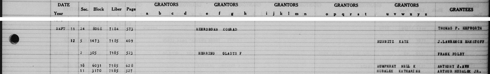
The 1950 census, Kings County. The Awn household on 86th Street: Anthony, Helen, Joseph, Jacqueline and Kathleen, with Helen's mother Waseela Saydah and sister Evelyn. The ages of the two living daughters are covered on the image. Source: 1950 U.S. Census, Brooklyn, Kings County, enumeration district 24-1265, sheet 8, sheet started 13 April 1950, as viewed on FamilySearch. Name as written: Awn.
- 1947The deed index lists Anthony as a buyer on block 6031 (probably this house)
- Nov 1949Antoon’s notice gives 95 86th Street as his address
- Apr 1950Three generations are counted in the house
- 6 Jul 1966Anthony dies at home
- 15 Oct 1979Helen sells the house
What we foundThe 1979 deed that sold the house calls the seller “Helen Zaloom, formerly known as Helen Awn.”
“Helen Zaloom, formerly known as Helen Awn”The deed for 95 86th Street, made 15 October 1979 (reel 1112, page 1652)
In 1947 Anthony probably bought the house at 95 86th Street. The deed index lists “Anthony J. Awn” as buyer on block 6031, the same block as his brother Mitchell’s entry that June, but it gives no lot or street, so the match is probable, not proven. Helen had grown up three blocks away, at 33 86th Street. By November 1949 her father’s death notice gives 95 86th Street as his address, so Antoon and Wassela probably moved in after the purchase.
The 1950 census shows three generations in the house: Anthony, Helen, their three children so far, Helen’s widowed mother Wassela and her sister Evelyn. Anthony died there in 1966. The house left the family on 15 October 1979, when Helen sold it to Edward and Helena Lynaugh; the deed is endorsed block 6031, lot 47.
Still open
Whether the 1947 index entry is this house: it gives a block but no lot or street.
The exact day of the 1947 purchase: probably 12 September, read from the page, not proven.
Family memory: life in the house on 86th Street. If you know, please tell Sarah.
Questions for the family
- Does anyone have photographs of the house, or memories of living there?
How we know this
- The 1950 census From the record, as printed.
- Block 6031, lot 47, on the 1979 deed From the record, as printed on the deed’s endorsement.
- The 1979 deed From the record, as read.
- The 1947 deed index, Anthony An index line, which points to the record but is not the record. The day is probable.
- The 1947 deed index, Mitchell An index line, which points to the record but is not the record.
Helen
Names: Helen Saydah (the 1917 index line has “Helen A Saydah”), Helen Awn after December 1940, and Helen Zaloom after 1976. Saydah is also written Saydak and Sayda.
Helen as a young woman. The family says this is Helen Saydah, in a hand-tinted studio portrait. The hairstyle probably fits the late 1930s to early 1940s; the April 1940 census gives Helen's age as 22, though her birth date of 9 January 1917 would make her 23 (as written in the census).
Source: Family photograph (a print kept in the family, photographed 11 Nov 2026). Photographer, date and place are not known.
The 1917 birth index, Helen A Saydah. An index line for "Helen A Saydah", born 9 Jan 1917, Brooklyn, certificate no. 2235. On the page image we read "Helen A." and "Jan. 9"; the left edge of the scan is cut and the certificate number is blurred, so 2235 rests on the index line. The date agrees exactly with the 1942 petition and the Social Security index, and the censuses fit.
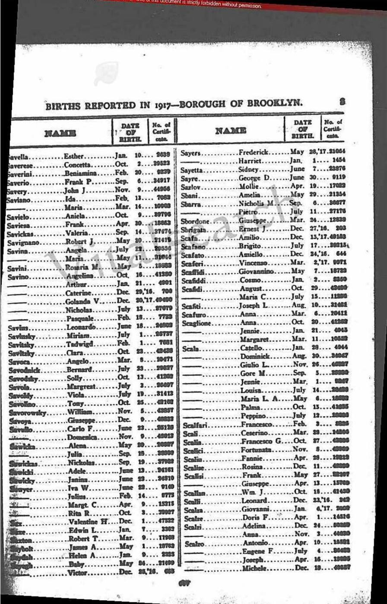
Marie Zaloom’s 1927 naturalization petition. A citizenship petition of "Marie Zaloom", 135 Amity St., Brooklyn, born "3 Dec 1893" at Aleppo, Syria; arrived at New York on 15 August 1908 on the "Lucania"; five children living with her: Rose, Evelyn, George, Edmond and Gilbert (born Feb 26, 1921); filed 25 May 1927. A Certificate of Arrival names "Zaloom, Mary", arrived August 15, 1908, "Lucania". Gilbert is probably the Gilbert Robert Zaloom of the Social Security lines (born 26 Feb 1921). The "Evelyn" here is Gilbert's sister, not Evelyn Saydah.
The 1940 census, Helen with her parents. 1940, Brooklyn, enumerated 10 April 1940, 33 86th Street: "Helen A.", daughter, 22, single, born New York, with her parents "Antone W." and "Wassela". 1950, 95 86th Street: "Helen", wife of "Awn Anthony", 33, born N.Y., keeping house, with her mother "Saydah Waseela" (57, widowed) and her sister "Evelyn" (30). A birth on 9 January 1917 gives 33 in April 1950, which agrees.
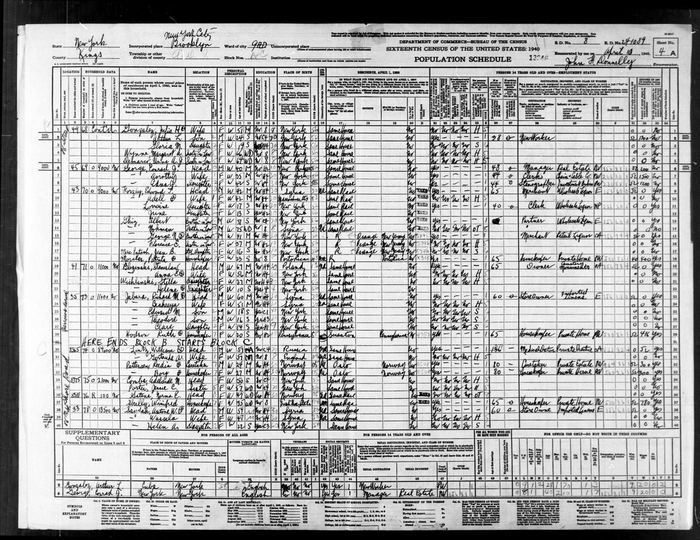
Helen with her infant son Joseph, family photograph C. The family’s photograph C, undated. The family says it shows Helen with Joseph as a baby (the names are the family’s labels on the print).

Anthony and Helen's anniversary, and the death of Isabel's father, January 1958. Two items from one page of the Caravan. The first says "Mr. and Mrs. Anthony Awn, of 96 86th St., celebrated their 17th wedding anniversary December 28th" (1957), which counts back to 28 December 1940, a day earlier than the 29 December 1940 date from the 1942 petition and the January 1941 Arabic papers, so the anniversary date is still an open question (these records disagree). The house number here is 96, while other records give 95. The second is the death notice of Fred H. Owen, of 81 86th Street, who died of a heart attack at Adelphi Hospital at 11 p.m. on 6 January (1958), two months after his wife Sarah. He had come to live with his daughter and son-in-law, Mr. and Mrs. Louis Awn, and the funeral was held at Our Lady of Lebanon. He is survived by two sons and a daughter, "Mrs. Louis (Isabelle) Awn" (as printed). This notice calls Isabel's father "Owen," while her 1937 marriage certificate gives her father only as "Fred" (no surname) and her mother's maiden name as "Sarah Ganimy", so her maiden name is a puzzle. Source: The Caravan (Brooklyn), Thursday, 9 January 1958, p. 12, Brooklyn Newsstand (Newspapers.com), image 557574442. Names as written: Anthony Awn, Fred H. Owen, Isabelle Awn.
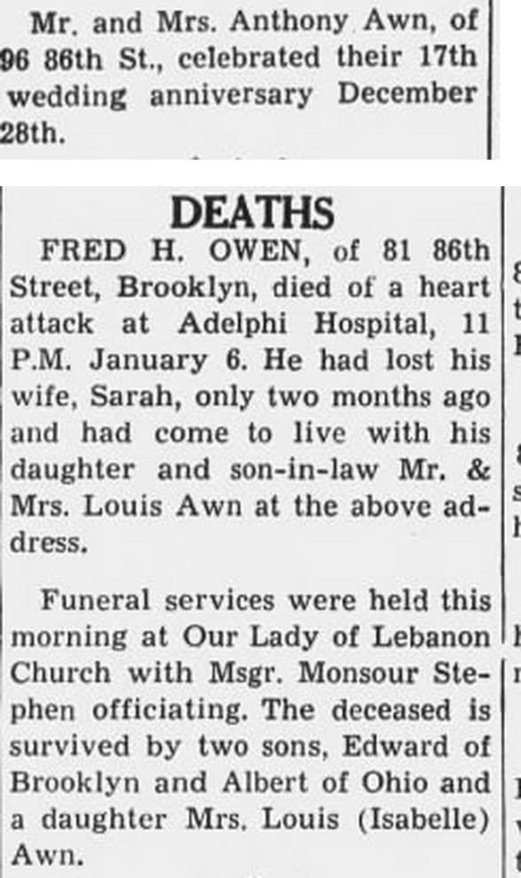
Helen and Gil on the Syramar guest list, 21 November 1975. In the golf club's "Report From Syramar," the list of people expected at the 48th Annual Dinner Dance includes "Ed and Jean [surname left out here], Gil Zaloom, Helen Awn, the Naz Katen's and George and Virginia Hakim." Gil and Helen are named side by side before the 1976 marriage recorded in the New York marriage index (they were probably a couple, though the column does not say so). Source: Home Reporter and Sunset News, 21 November 1975, Section 2, p. 12, "Report From Syramar" by George Hamrah. Viewed online; host and image number not recorded. Names as printed: Gil Zaloom, Helen Awn, George and Virginia Hakim. Telephone numbers printed in the column are covered on the image.
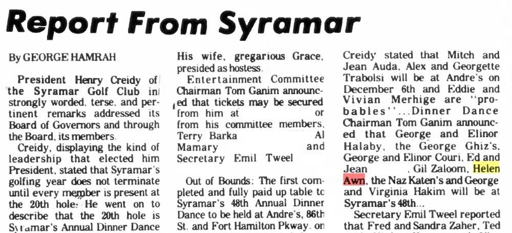
Helen’s 1979 deed. A deed made 15 October 1979 and recorded 25 October 1979 (a bargain and sale deed, a standard form of deed): "Helen Zaloom, formerly known as Helen Awn, residing at 95 - 86th Street" sold the house to a married couple for "Ten Dollars and other valuable consideration." The house left the family in 1979, and Helen was already using the name Zaloom. "Block 6031, Lot 47, County of Kings" is typed on the back sheet of the deed, and "6031 / 47" is also written in the margin of page 1. We hold no separate city property record, so the deed itself is the record for this. She signed it with the same name.
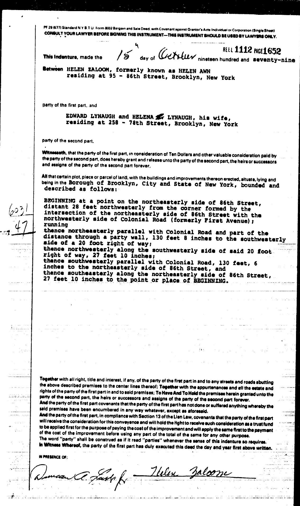
Helen Awn Zaloom, paid death notice, 2000. Confirmed: died 26 January 2000; "beloved wife of the late Anthony J. Awn & Gilbert Zaloom"; mother of Jacqueline, Kathleen, Stephanie and Marie and of the late Joseph Awn (married surnames covered on the image); survived by 13 grandchildren and three great-grandchildren. Service at Fourth Avenue Presbyterian Church.
Source: The New York Times, Paid Notice: Deaths, 27 Jan 2000, Section B, p. 8. Name as written: Zaloom, Helen Awn.
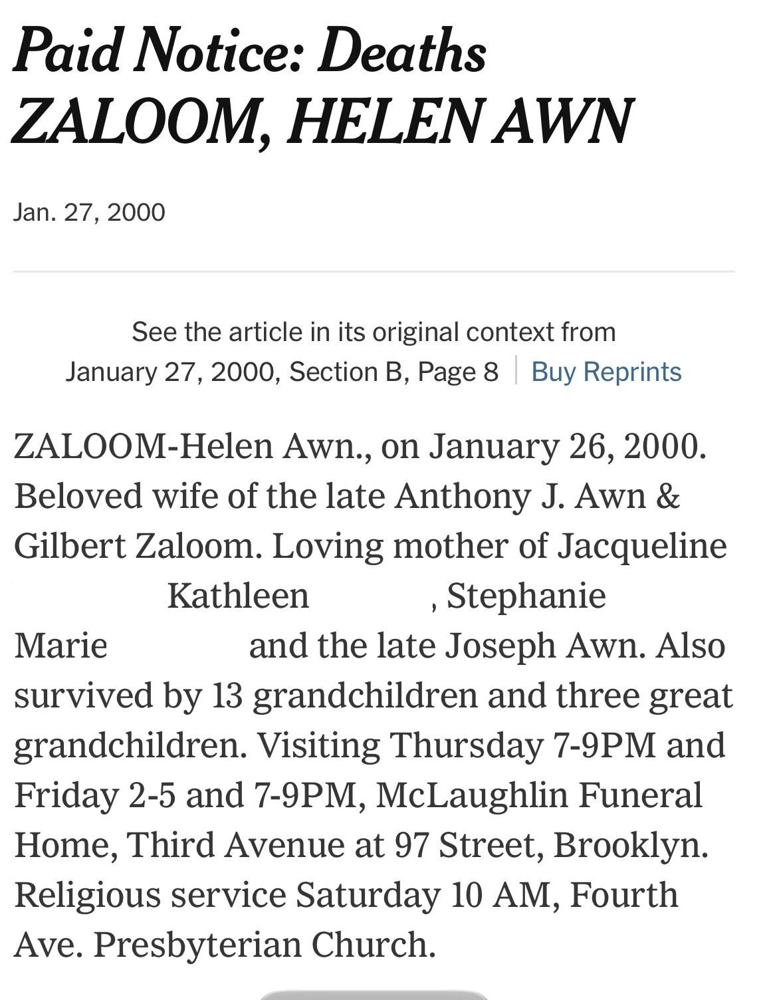
Memorial card for Helen Awn Zaloom, January 2000. A printed prayer card headed "In Loving Memory of Helen Awn Zaloom, January 26, 2000," with the 23rd Psalm and the funeral home's name (McLaughlin & Sons) at the bottom. It gives her later married name, Zaloom, and her first married name, Awn, together (from the family’s own card). Source: printed memorial card, privately held by the family; photograph from Jackie. Name as written: Helen Awn Zaloom.
- 9 Jan 1917Born in Brooklyn
- 10 Apr 1940The census counts her at 22, single, with her parents (her birth date makes her 23)
- Dec 1940Marries Anthony Awn
- Apr 1950Counted at 95 86th Street, with her mother and her sister Evelyn
- Jul 1966Anthony dies
- 1976Marries Gilbert Zaloom, as the marriage index has it
- 26 Jan 2000Dies, aged 83
What we foundEvery record of Helen’s life agrees on one birth date, 9 January 1917. Only the 1940 census is a year off, and it is the census that gives the odd figure.
“beloved wife of the late Anthony J. Awn & Gilbert Zaloom”The New York Times, paid death notice, 27 January 2000, p. B8
Helen Saydah was born on 9 January 1917 in Brooklyn. Anthony’s 1942 petition gives the day and year, and a New York birth index line for “Helen A Saydah,” born 9 January in Brooklyn, certificate no. 2235, agrees. That line points to the record but is not the certificate, and the left edge of our copy is cut, so the number rests on the index. The Social Security index, her 2000 notice and her memorial card all fit the same date.
The censuses follow her. In January 1920 she is “Helen,” 2 11/12, with “Antoon” and “Waseela” Saydah. In April 1930, at 13, she is at 33 86th Street, at school, with her sisters Evelyn (10) and Virginia (8 4/12). Both ages fit 9 January 1917. The family says Helen went to Bay Ridge High School (the family’s account, no record); we do not yet know what she did before she married.
The 1940 census is the one that disagrees. On 10 April 1940 it lists “Helen A.,” 22, single, still at 33 86th Street with her parents, “Antone W.” and “Wassela.” A January 1917 birth makes her 23, so the 22 stands as a small open question. A few months later she married Anthony, and the wedding has its own section above. In January 1958 the Caravan said that Mr. and Mrs. Anthony Awn, “of 96 86th St.,” celebrated their 17th anniversary on “December 28th.” That is a day before the 29 December that the 1942 petition and the January 1941 Arabic papers point to, and the house number is 96 where the 1950 census says 95. Both differences stay open.
In April 1950 the census has “Helen,” wife of “Awn Anthony,” 33, keeping house at 95 86th Street, with her mother “Saydah Waseela” (57, widowed) and her sister “Evelyn” (30) in the household. Anthony died in July 1966. In November 1975 the Home Reporter’s Syramar column listed “Gil Zaloom” and “Helen Awn” among those expected at the golf club’s dinner dance, and a New York marriage-license index line for 1976 pairs “Helen A Awn” with “Gilbert R Zaloom.” That is an index line, with no day and no image. Social Security lines give a Gilbert Robert Zaloom born in Brooklyn on 26 February 1921 to Nasri N. Zaloom and Marie Maroun, who died on 24 February 1995, and he is probably the same man; Find a Grave places him at Saint John Cemetery. In October 1979 a deed for 95 86th Street is signed “Helen Zaloom, formerly known as Helen Awn.”
Helen died on 26 January 2000, aged 83. The New York Times paid notice of 27 January names her daughters Jacqueline, Kathleen, Stephanie and Marie and her late son Joseph, 13 grandchildren and three great-grandchildren, and puts the service at Fourth Avenue Presbyterian Church. Her memorial card gives the same date. Find a Grave places her at Green-Wood Cemetery in Lot 38063, Section 57, the lot given for her sister Evelyn, so she probably lies in the Saydah lot; we have not seen the cemetery’s own record.
Still open
Helen’s age in the 1940 census: 22 as printed, 23 by her birth date.
The wedding day: 28 December in the Caravan of 1958 against 29 December in the 1942 petition and the 1941 papers.
The house number: 96 in the Caravan of 1958 against 95 in the 1950 census and the 1979 deed.
A public-records index line gives addresses for “Helen A Zaloom” after January 2000, so it is either another woman with the same birth date or loosely compiled.
The 1976 marriage is known only from an index line, and the cemetery’s own record of her burial has not been seen.
Family memory: how you remember Helen. If you know, please tell Sarah.
Questions for the family
- Where did Helen go to school, and what did she do before she married?
- What do you remember of Helen?
- Does anyone know the day and place of Helen and Gilbert’s wedding in 1976?
How we know this
- Marie Zaloom’s 1927 naturalization petition From the record, as read.
- Helen’s 1979 deed From the record, as read.
- The 1917 birth index line An index line, which points to the record but is not the record. That she is our Helen is probable.
- Anthony’s 1942 petition From the record, as read.
- The 1920 and 1930 censuses From the records, as printed.
- The 1940 and 1950 censuses From the records, as printed. The 1940 age is a small open question.
- The Caravan, 9 January 1958 From the page, as printed. Its date and house number differ from other records.
- The Home Reporter, 21 November 1975 From the page, as printed.
- The 1976 marriage-license index line An index line, which points to the record but is not the record. It has no day and no image.
- Gilbert’s Social Security and Find a Grave lines Index lines and a volunteer-made page, which point to records but are not the records. That he is the 1976 husband is probable.
- The 1979 deed From the record, as read.
- The 2000 death notice and memorial card From the notice and the card, as printed; the funeral home’s name on the card is our reading.
- Her Social Security death index line, her Find a Grave page and a public-records line Index lines and a volunteer-made page, which point to records but are not the records. The public-records line has dates after her death.
Five children
Anthony and Helen’s children are Joseph, Jacqueline (Jackie), Kathleen, Stephanie and Marie. Joseph, who died in 1989, is the only one pictured here; his four sisters and their families are in the descendants section.
Helen with her baby son Joseph. The family says this shows Helen holding her infant son, Joseph Anthony Awn, who was born on 14 November 1941 (Anthony’s petition). Probably so: the winter coats, the baby's snowsuit and the bare branches suggest winter 1941 to 1942. We do not know where the photograph was taken.
Source: Family photograph (a print kept in the family, photographed 11 Nov 2026). Photographer, date and place are not known.
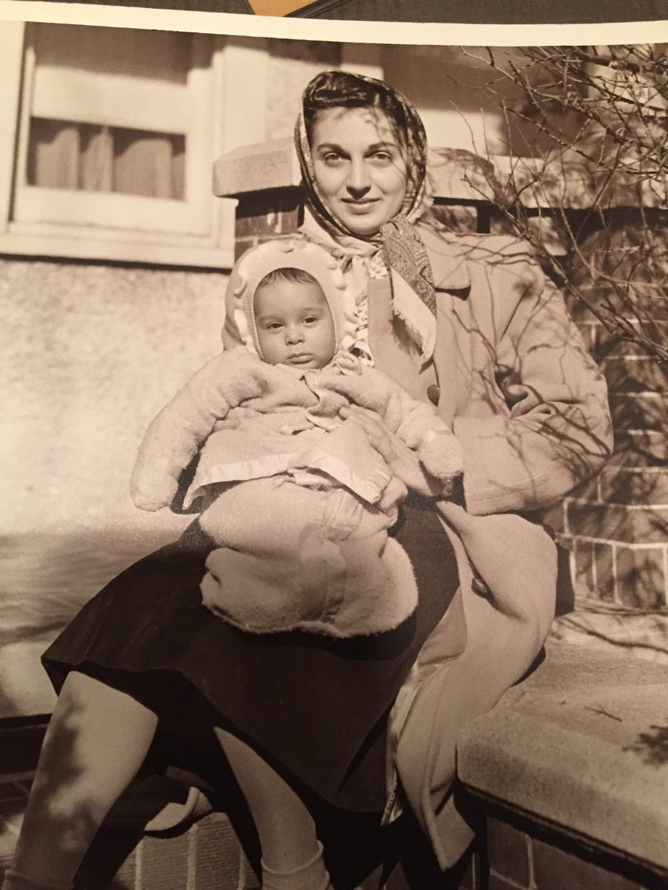
The Marines are getting Joseph, 13 December 1963. The “On The Line” column of the Home Reporter and Sunset News, Friday 13 December 1963, page 38: “THE MARINES are getting Joseph Awn, son of Mr. and Mrs. Anthony Awn. Sister Jackie gave him a surprise party.” It is the earliest notice we hold of Joseph’s enlistment, eight months before the training notice of August 1964.
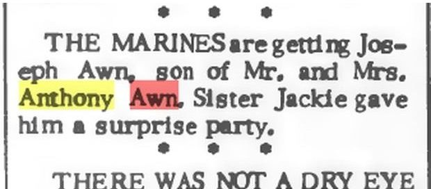
Joseph in the Marines, 21 August 1964. A photograph and caption: "Marne [Marine] Pvt. Joseph A. Awn, son of Mr. and Mrs. Anthony Awn of 95-86th St., has completed individual combat training at the Marine Corps Base in Camp Pendleton, Calif." The newspaper misspelled "Marine" in its own caption. Source: Home Reporter and Sunset News, Friday, 21 August 1964, p. 21, "Marine Pvt." Viewed online; host and image number not recorded. Names as printed: Joseph A. Awn, Anthony Awn.
Joseph, from the Home Reporter, 21 August 1964. The photograph printed with the notice “Marine Pvt. Joseph A. Awn, son of Mr. & Mrs. Anthony Awn of 95 - 86th St.,” cropped from page 21. The caption names him beside the photograph.
Joseph's wedding, reported 16 June 1967. The couple were married on Sunday afternoon, 11 June, in Our Lady of Lebanon Church, Brooklyn Heights, by Chor-Bishop Monsour Stephen, with a reception at the Hampshire House in New York. Joseph is called the son of Mrs. Anthony Awn "and the late Anthony Awn of Brooklyn," which fits Anthony's death in July 1966 (see his death notice, Document 137). His sister Kathleen Awn was an attendant, and the groom's brother-in-law was among the ushers. They planned a honeymoon in Jamaica. A formal portrait of the bride, Virginia, in her veil, taken by Branford Bachrach, is printed with the article; it is covered on this page. Source: Home Reporter and Sunset News, Friday, 16 June 1967, Section 2, p. 1. Viewed online; host and image number not recorded. Names as printed: Joseph Anthony Awn, Anthony Awn. The bride's portrait and the names of other living people in the article are covered on the image.
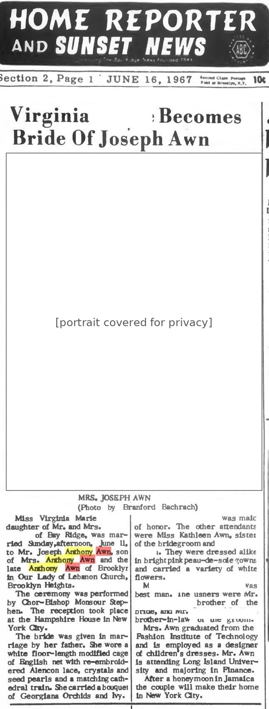
Memorial card for Joseph Anthony Awn, January 1989. A printed prayer card (the 23rd Psalm) headed "In Memory of Joseph Anthony Awn, January 18, 1989," photographed where it hangs in the family home. The card gives 18 January 1989 as his date of death; Find a Grave gives 20 January 1989, so these records disagree by two days. The card is the family's own record (the family says so); the Find a Grave date may be the burial date. Source: printed memorial card, privately held by the family; photograph from Jackie. Name as written: Joseph Anthony Awn.
- 14 Nov 1941Joseph is born
- Apr 1950The census counts Joseph, Jacqueline and Kathleen at 95 86th Street
- 13 Dec 1963“The Marines are getting Joseph Awn”
- 21 Aug 1964Finishes combat training at Camp Pendleton
- 11 Jun 1967Marries at Our Lady of Lebanon
- 18 Jan 1989Dies, aged 47, by the memorial card
What we foundThe Home Reporter followed Joseph into the Marines twice: in December 1963 “the Marines are getting Joseph Awn,” and eight months later a photograph and a notice that he had finished combat training.
“Marine Pvt. Joseph A. Awn, son of Mr. & Mrs. Anthony Awn”Home Reporter and Sunset News, 21 August 1964, page 21
Anthony and Helen had five children: Joseph, Jacqueline, Kathleen, Stephanie and Marie. Joseph, the eldest, was born on 14 November 1941, about a year after the wedding; the New York birth index and his father’s 1942 petition agree on the date. In April 1950 the census counts “Joseph,” 8, and two young daughters at 95 86th Street with their parents and with “Saydah Waseela” and “Evelyn,” printed as the head’s mother-in-law and sister-in-law. A notice in the Arabic newspaper As-Sameer on 12 November 1946 congratulates “Antoun Aoun and his wife, Mrs. Helen” on a baby girl, and another on 7 May 1951 on a baby girl called “the third of their children” (our translations, to be confirmed by a native reader).
Joseph was in the Marines in 1963 and 1964, as the two notices show. He married at Our Lady of Lebanon on 11 June 1967; the Home Reporter reported the wedding on 16 June, calling him the son of “Mrs. Anthony Awn and the late Anthony Awn.” He died on 18 January 1989, aged 47, by the memorial card the family printed, and Find a Grave places him in the grave next to his father’s at Saint John Cemetery (a pointer, not proof). Find a Grave gives 20 January, so the two disagree.
His sisters appear in the same papers. A 1964 engagement notice names Jackie, Stephanie is on a 1976 marriage-license index line (an index, with no day and no image), and Helen’s 2000 notice names her four daughters and “the late Joseph Awn.”
Still open
Joseph’s death date: 18 January 1989 on the memorial card, 20 January on Find a Grave, which may carry the burial date. The cemetery’s own record and a 1989 death notice have not been seen.
The 1951 notice calls the baby “the third of their children,” though four children had been born by then: a miscount, or “third daughter”?
Kathleen’s marriage date is not known.
Family memory: stories of growing up on 86th Street. If you know, please tell Sarah.
Questions for the family
- Which stories of growing up on 86th Street should go here?
- Does anyone know why the 1951 notice says “third of their children”?
How we know this
- Joseph’s 1941 birth index line An index line, which points to the record but is not the record.
- The 1950 census From the record, as printed. The children’s names are left out of the picture.
- As-Sameer, 12 November 1946 Our translation, to be confirmed by a native reader.
- As-Sameer, 7 May 1951 Our translation, to be confirmed by a native reader. The count of children is an open question.
- The Home Reporter, 13 December 1963 From the printed page.
- The Home Reporter, 10 April 1964 From the printed page. No picture, because it names living people.
- Joseph: the Marines in 1964, his wedding in 1967 and his memorial card From the printed pages and the card. Find a Grave is a pointer, not proof.
- Stephanie’s 1976 marriage-license index line An index line, which points to the record but is not the record. It has no day and no image.
- The New York Times paid notice, 27 January 2000 From the printed notice; the living children are named by first name only elsewhere on this site.
Anthony's death
Names: the obituary calls him “Tony” and “Anthony J. Awn.” His brothers and sisters appear under the spellings Awn and Aoun.
Anthony's death notice, 15 July 1966. As printed (spelling used: Awn). Under the headline "Anthony J. Awn Dies Here; Executive Was Civic Worker," the paper says he died suddenly on July 6 at his home, 95 86th Street, aged 52, and was born in Lebanon. He had just come home from the family's first weekend at their new country home in the Poconos. Known as "Tony," he and his wife, the former Helen Saydah, had celebrated their 25th wedding anniversary the previous fall.
He was an associate in the Awn Specialty Shop in lower Manhattan, a past president of the St. Nicholas Young Men's Association and a member of the Knights of Columbus, whose honor guard stood at the wake. A Solemn Requiem Mass was offered at Our Lady of Lebanon, Remsen Street, with burial in St. John's Cemetery. The survivors named include his sisters Matilda Gorayeb and Theresa Koury and his brothers John, Mitchell and Elias. The notice also names his widow, children and one grandchild. One daughter's married surname has been covered on the image.
Source: Home Reporter and Sunset News (Brooklyn), 15 July 1966, page 11 (the article only; advertisements are cropped out). The day of the week is not printed; 6 July 1966 was a Wednesday.
- 6 Jul 1966Anthony dies at home, aged 52
- 8 Jul 1966The Daily News prints a notice (an index line only)
- 9 Jul 1966The date Find a Grave gives, probably the burial
- 15 Jul 1966The Home Reporter obituary
- 16 Jun 1967A wedding notice calls him “the late Anthony Awn”
What we foundThe obituary and Find a Grave are three days apart, 6 July and 9 July; the 9th may be the burial date.
“a civic and church worker prominent in Bay Ridge’s Syrian community”Home Reporter and Sunset News, 15 July 1966, page 11
Anthony died suddenly on Wednesday 6 July 1966, at home at 95 86th Street, aged 52, by the Home Reporter’s obituary. It says he had just come back from the family’s first weekend at a new home in the Poconos. He was an associate in the Awn Specialty Shop in lower Manhattan, a past president of the St. Nicholas Young Men’s Association and a member of the Knights of Columbus, whose honor guard stood at his wake.
A solemn Requiem Mass was said at Our Lady of Lebanon on Remsen Street, and he is buried at St. John’s Cemetery in Queens. Find a Grave lists him in Section 3, Row C, Grave 001A, probably in the same row as his brothers (a pointer, not proof). The notice names his brothers John, Mitchell and Elias and his sisters Matilda Gorayeb and Theresa Koury; George is not among them, since he had died thirty-six years before. His son’s wedding notice the following June calls him “the late Anthony Awn.”
Still open
The date of death: 6 July in the obituary against 9 July on Find a Grave. The burial record would settle it.
We have not seen his death certificate or the Daily News notice of 8 July.
Family memory: the days after, and the Poconos house. If you know, please tell Sarah.
Questions for the family
- What do you remember of the days after, or of the Poconos house?
How we know this
- The Home Reporter, 15 July 1966 From the printed page.
- The Home Reporter, 16 June 1967 From the printed page.
- The Daily News, 8 July 1966 An index line, which points to the record but is not the record.
- Find a Grave, Anthony J. Awn An index line, which points to the record but is not the record.
The family Jackie married into
Spellings: the family name is Merhige on these records. Amin’s own name is written “Amen” on one ship list and “Amin H Merhige” in his petition. The Merhiges came from Tripoli, in what is now Lebanon.
The ship Château Lafite, List No. 1. Confirmed: a group of Merhige passengers is listed going to "his brother Amin, 98 Washington Street," and Nassib Chabour is listed going to "his cousin Amin Merhige." Probable: this is the same Amin Merhige at 98 Washington Street named as the "cousin Amin" in Wassilah Hadad's List No. 2, which links the Hadad and Merhige families.
Source: passenger manifest, Château Lafite, List No. 1, lines 22-30. Names as written: Merhige, Chabour.
Amin Merhige becomes a citizen, 1904. Confirmed: Amin Merhige swore his declaration of intention on 7 December 1900, swore his petition and oath on 25 August 1904, and was admitted on 31 August 1904. The declaration and petition are shown side by side.
Source: naturalization petition (p. 420) and declaration/testimony (p. 419), duplicate no. 10774. Name as written: Merhige, Amin.
The Merhige family in 1905. in June 1905 Amin Merhige (34, born Syria, 12 years in the United States, a citizen, an importer of goods) lived at 421 43rd Street, Brooklyn, with his wife Helen (24, born Syria, 4 years here) and their son Habib (3, born in the United States). The census lists them at one address but states no relationships, so that Habib is their son is probable (the 1910 and 1930 households fit). Probably, not proven: this Amin is the "cousin Amin" on Washington Street named on the 1898 ship card of a girl called Wassilah Hadad. Source: New York State census, 1905, Brooklyn, Kings, Assembly District 7, Election District 8, page 24 (FamilySearch, "Kings, New York, United States records," image 235 of 587, ark 3:1:S3HT-622W-1ND). Name as written: Merhige.
The Merhige household, 1910 census. Confirmed: the Merhige family in Brooklyn, sheet 14B, lines 80-87.
Source: 1910 U.S. Census, Brooklyn, sheet 14B, lines 80-87. Name as written: Merhige.
Helen Merhige's passport application, April 1923. Helen Merhige, a naturalized citizen by her husband's papers, swore on 17 April 1923 that she was born in Syria on or about 5 July 1882 and married Amin on 1 March 1901. She planned to sail from New York on the Britannia on 19 May 1923 for France and Syria, to return within six months, and gave her home as 8314 11th Avenue, Brooklyn. The second page gives her description (age 40, 5 feet 4 inches, blue eyes) and her photograph; Habib Merhige swore he had known her 20 years. That he is her son is probable: the form does not say so, but the censuses show Habib as Amin and Helen's son. Probably (inference, not stated in the record): the trip fits Habib's marriage in Tripoli that July. Source: U.S. passport application, April 1923, stamped 271237 and 271238 (FamilySearch, "United States records," images 594 and 595 of 799, arks 3:1:3QS7-99D3-TS5N-T and 3:1:3QS7-99D3-TS5D-5). Name as written: Helen Merhige.
The Merhige household, 1930 census. Confirmed: the Merhige family at house number 8314, sheet 6B, lines 95-100. Family: the family says the Merhiges built the house; the census does not show this.
Source: 1930 U.S. Census, sheet 6B, lines 95-100. Name as written: Merhige.
Georgette Merhige's petition and oath, 1931 and 1932. Georgette Habib Merhige, a housewife of 8314 11th Avenue, says she was born in "Tryolimavie," Syria (Tripoli, as we read it), on 10 January 1910, married Habib M. Merhige at Tripoli on 3 July 1923, left Cherbourg and entered at Rouses Point, New York, on 11 September 1923. Her witnesses, on 3 August 1931, were her husband Habib (a manufacturer of silks) and Helen Merhige. She took the oath of allegiance on 31 May 1932. Her maiden name, Halaby, is not on the petition; it is on the death records of two infants she and Habib lost in 1930 and 1932. These records disagree: a marriage at age 13 sits oddly with the 1930 census, which says she first married at 17. The certificate-of-arrival number, 2-117884, is visible in the witness certification. Source: Petition for citizenship no. 157613, U.S. District Court, Eastern District of New York, Brooklyn (FamilySearch, "Brooklyn, New York City, New York, United States records," images 1230 and 1231 of 1421, arks 3:1:3Q9M-CSMP-39MF-4 and 3:1:3Q9M-CSMP-39S3-M). Name as written: Georgette Habib Merhige.
- Oct 1893Amin lands in New York, by his declaration
- 31 Aug 1904Amin becomes a citizen
- 1905An importer on 43rd Street
- 3 Jul 1923Habib marries Georgette at Tripoli
- 11 Sep 1923The couple enters at Rouses Point
- 14 Jun 1941Amin’s death, by an index line
- Apr 1964An engagement notice joins the two families
What we foundAmin’s years in America are written three ways: landing in 1893 on his own declaration, 1900 in the 1930 census, and “in U.S. 40 yrs.” in the 1941 death index.
“his brother Amen”The Château Lafite manifest, December 1897, naming whom two Merhige men were going to
The Merhiges were not related to the Awns by blood; they joined the story through Jackie’s marriage in the 1960s. Amin Merhige was born about 1870 (Syria in the 1905 census, “Turkey” on his own declaration) and landed in New York in October 1893, by his declaration of intention. He became a citizen on 31 August 1904. By 1905 he was an importer at 421 43rd Street with his wife Helen, born about 1882 (a different Helen from Helen Saydah), and their small son Habib. In 1910 he was a dry goods merchant, with Helen and four children at home. By 1930 he was a silk manufacturer who owned the house at 8314 11th Avenue. The family says the Merhiges built the house; the records have the household there by April 1923.
In April 1923 Helen applied for a passport to travel to France and Syria on the Britannia, with Habib Merhige swearing he had known her twenty years. The form does not say Habib is her son; the censuses do, so that is probable. That July Habib married Georgette Halaby at Tripoli, and the couple entered the United States at Rouses Point, New York, on 11 September 1923. The trip fits a journey to arrange the wedding, but no record says so. Georgette became a citizen on 31 May 1932. A death index lists two infants of Habib and Georgette, a girl in September 1930 and a boy in March 1932, probably this couple. In April 1940 the household held Habib, a silk broker, Georgette, two young children, and Amin and Helen. Amin died on 14 June 1941, by an index line that is a pointer, not the certificate.
The Home Reporter’s engagement notice of 10 April 1964 joins the two families, and a Merhige was an usher at Joseph’s wedding in 1967. That the fiancé is a grandson of Amin and Helen is probable: the first names of his parents match, and the 1940 census has a young son in that household.
An open question connects the two sides. A ship card from January 1898 shows a ten-year-old “Wassilah Hadad” going to a cousin named Amin on Washington Street, and our notes tie that Amin to Amin Merhige. If that card is Wassela, Antoon’s wife, then the two families would be distant cousins. But the 1910 census says Wassela’s family had been in Brooklyn since 1892, so the card is probably a different girl, and no record links the Hadads to the Merhiges. This is only a question for the family. The card names Tripoli, where the Merhiges came from, while Wassela’s marriage certificate says Zahleh.
Still open
Amin’s years in the U.S.: 1893, 1900 or about 1901.
Helen’s “10 years, 1913 to 1923” on her passport application, against the 1905 and 1910 censuses that already list her in the household.
Georgette’s birth year: 10 January 1910 on her petition, but about 1907 to 1908 by the 1930 census and about 1911 to 1912 by the 1940 one.
The street number at the Hadad ship card: 98 or 89 Washington Street.
Whether the Hadads and Merhiges are connected.
Family memory: the Merhige house on 11th Avenue. If you know, please tell Sarah.
Questions for the family
- Did the Merhige and Hadad families know each other? A 1898 ship card hints at a cousin named Amin, but that link is not proven.
- Does anyone know where the Merhige house on 11th Avenue stood, or have photographs of it?
How we know this
- The Château Lafite manifest, December 1897 From the record, as read. The Hadad card is a question, not a link.
- Amin’s naturalization, 1900 to 1904 From the record, as read.
- Amin’s own affidavit, 1904 From the record, as read.
- The 1905 state census From the record, as read.
- The 1910 census From the record, as read. His year of arrival is read as 1892.
- Helen Merhige’s passport application, 1923 From the record, as read.
- The 1930 census From the record, as read.
- Georgette’s petition, 1931 and 1932 From the record, as read. Her birth year is an open question.
- The infants, 1930 and 1932 An index line, which points to the record but is not the record.
- The 1940 census From the record, as read; the children’s names are not shown on this site.
- Amin’s death, 1941 An index line, which points to the record but is not the record.
- The New York Times, 3 September 1925 From the printed page. That “A. Merhige” is Amin is possible, not proven.